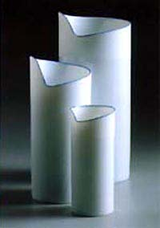
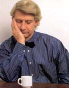

| Piet Stockmans
Belgian ceramic designer

"Creation is the result of activity and not of thinking. It
is activity that generates ideas which, themselves, give rise to
other ones. It is a process in the course of which decisive choices
are made in a mysterious way. It is the automatism with which the
farmer ploughs the fields, a phenomenon that can be compared to
the way prayers are used, mantras recited or everyday gestures repeated.
It is a quest for simplicity, peace, physical well-being."
Piet Stockmans
is a Belgian ceramist and designer. From 1966-89 Stockmans worked
with the Dutch company Royal Mosa, where he designed the world’s
most ubiquitous coffee cup, ‘Sonja’. From 1969-98 he
taught industrial design at the Institute of Higher Education in
Limburg and from 1983-85 he was Professor of Ceramic Design at the
Academy of
Industrial Design in Eindhoven. Since 1989 he has worked as a freelance
designer. In 1998 he was the recipient of the prestigious Henri
van der Velde prize for outstanding career achievement. Throughout
his design career, Stockmans has also successfully exhibited one-of-a-kind
ceramics and ceramic installations using thousands of multiples.
He has limited his palette to a white porcelain used in combination
with a blue slip, however this has not limited his prolific output
nor his creativity.
Images and quote courtesy of Piet Stockmans.
More Articles
More Artists of the Week
|